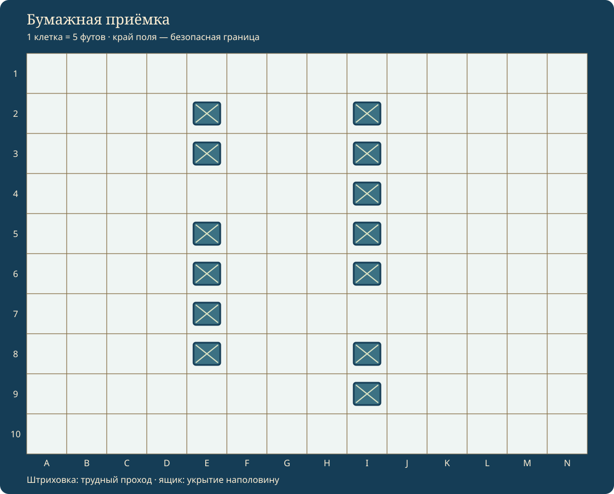
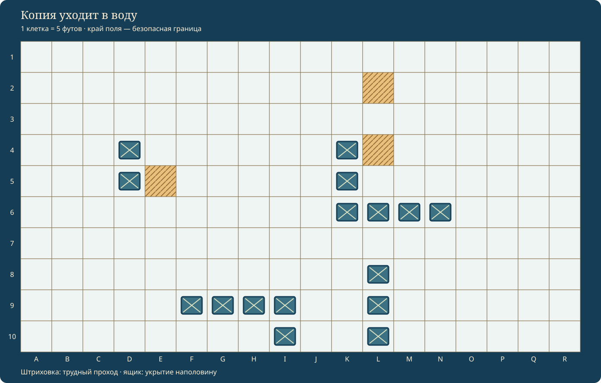
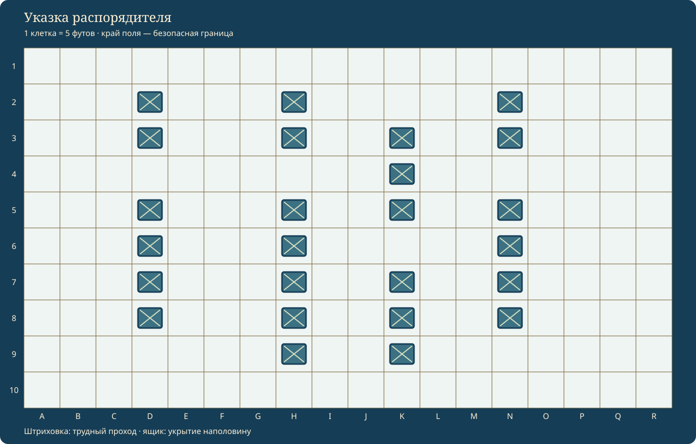
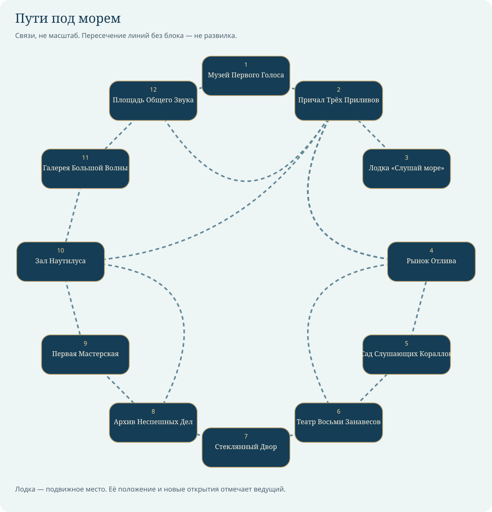

Пути под морем и смелые идеи
Три необязательные встречи: приёмка в Стеклянном Дворе, причал в девятый вечер и галерея Наутилуса во время торгов. Каждая идёт на своём поле, с противниками по числам справочника под городскими масками, и у каждой есть мирный выход. Сначала предложите его. Клетки точно совпадают с пакетом кампании; нарисованные декорации не создают скрытых препятствий. В Галерее Большой Волны боевой встречи нет: там наблюдают световой узор из сухой ниши.
Фигуры для печатиБумажная приёмка
Вечер 6, служебный проход Стеклянного Двора. Два складных краба приняли переносимые образцы за неоформленный груз и преграждают путь. Бой начинается только если игроки его выбрали. Цель: Пронести образцы и сравнительную карточку в сухой проход, не разбив ни одной копии. Разбитый образец уже не доказательство. Мирный путь: Дора показывает свой знак мастерской; герои кладут образец на проверочный стол и ждут отметки; или кто-то дотягивается до рычага «приёмка закрыта» у двери. Любой из трёх путей кончает спор без боя. Тактика: Крабы щёлкают и тянут клешни к тому, кто несёт образец, и не трогают пустые руки. Схваченный образец они относят на стол приёмки, а не ломают. Как только кто-то из них сложен или рычаг опущен, второй садится и ждёт.



Начало героев: A5, A6, A4. Противники: N5, N6.
Краб приёмки: 13 HP, защита 15, скорость 30 футов, Коготь +3, 1к6 + 1
Пронести образцы и сравнительную карточку в сухой проход, не разбив ни одной копии. Разбитый образец уже не доказательство.
Без боя: Дора показывает свой знак мастерской; герои кладут образец на проверочный стол и ждут отметки; или кто-то дотягивается до рычага «приёмка закрыта» у двери. Любой из трёх путей кончает спор без боя.
Крабы щёлкают и тянут клешни к тому, кто несёт образец, и не трогают пустые руки. Схваченный образец они относят на стол приёмки, а не ломают. Как только кто-то из них сложен или рычаг опущен, второй садится и ждёт.
При трёх игроках оба краба держатся вместе у стола; при четырёх один встаёт у двери, и обход через стеллажи становится настоящим выбором.
Мастерская: ряды стеллажей с холодными образцами, между ними узкие проходы; за стеллажами можно спрятать несомую вещь. Горячая печь отгорожена и в поле не входит.
Копия уходит в воду
Вечер 9, Причал Трёх Приливов, между 11:30 и полуднем: в полдень ворота Южного шлюза откроются, и всё, что стоит у решётки, уйдёт за свод вместе с водой. Тимоха уже сдал ящик со стеклянной копией латунным крабам-грузчикам и стоит у перил, крича, что ему заплатили выбросить старую лампу; крабы катят ящик к решётке. Бой начинается только если игроки его выбрали. Цель: Снять ящик с копией с грузовых крабов до того, как он окажется за решёткой шлюза. Копия внутри хрупкая: кто хватает ящик, тот бережёт его. Мирный путь: Показать крабам бирку почтовой артели или квитанцию Доры: груз чужой, и они останавливаются. Убедить Тимоху карточкой экспоната: он сам кричит крабам «стоп» и отдаёт поручение с печатью. Попросить Нору подвести лодку к решётке со стороны канала и принять ящик, когда крабы его отпустят. Тактика: Два латунных грузчика везут ящик к воде по прямой и не дерутся первыми: клешни у них для того, кто держится за ящик. Крабики-подручные цепляются за ноги и мешают бежать, но сами падают от любого толчка. Ящик движется на пять футов за ход грузчика; у решётки шлюза бой кончается в любом случае: либо ящик у героев, либо он за решёткой, и дальше решают часы прилива.



Начало героев: R5, R6, R4. Противники: A5, A6, A4, A7.
Краб-грузчик: 13 HP, защита 15, скорость 30 футов, Коготь +3, 1к6 + 1. Крабик-подручный: 9 HP, защита 9, скорость 20 футов, Мерзкая слизь +2, 1к4
Снять ящик с копией с грузовых крабов до того, как он окажется за решёткой шлюза. Копия внутри хрупкая: кто хватает ящик, тот бережёт его.
Без боя: Показать крабам бирку почтовой артели или квитанцию Доры: груз чужой, и они останавливаются. Убедить Тимоху карточкой экспоната: он сам кричит крабам «стоп» и отдаёт поручение с печатью. Попросить Нору подвести лодку к решётке со стороны канала и принять ящик, когда крабы его отпустят.
Два латунных грузчика везут ящик к воде по прямой и не дерутся первыми: клешни у них для того, кто держится за ящик. Крабики-подручные цепляются за ноги и мешают бежать, но сами падают от любого толчка. Ящик движется на пять футов за ход грузчика; у решётки шлюза бой кончается в любом случае: либо ящик у героев, либо он за решёткой, и дальше решают часы прилива.
При трёх игроках грузчиков двое и подручных двое; при четырёх подручных трое. Если стол устал, уберите подручных и оставьте гонку с ящиком.
Сухой причал под стеклянной аркой: ряд тумб, сложенные корзины, за которыми можно укрыться, мокрые доски у решётки шлюза (трудная местность). Вдоль канала перила по пояс: в воду никто не падает, зато поскользнувшийся теряет ход.
Указка распорядителя
Вечер 11, спиральная галерея Зала Наутилуса во время торгов. Если план героев раскрыт шумно, распорядитель поднимает латунную указку, и складские крабы получают приказ отнести лот № 7 в запертый склад раньше удара молотка. Бой начинается только если игроки его выбрали. Цель: Не дать унести Жемчужину из зала, пока звучит запись первых мастеров, или самим добраться до открытого рожка. Победа — не сложенные крабы, а предмет, оставшийся на виду у всего зала. Мирный путь: Предъявить служителю хартию и знак семи волн, подтверждённый под лампой: по правилу молотка спорный лот остаётся на столе без броска. Включить запись раньше, чем крабы дойдут до склада: зал сам потребует остановиться. Попросить Ирис произнести слово представителя общины. Тактика: Указка летает над рядами и указывает крабам цель; пока она в воздухе, крабы идут к лоту кратчайшим путём и не отвлекаются на героев. Сложенная указка оставляет крабов стоять там, где их застали. Крабы зажимают, но не бьют того, кто держит Жемчужину двумя руками.



Начало героев: R5, R6, R4. Противники: A5, A6, A4.
Складской краб: 13 HP, защита 15, скорость 30 футов, Коготь +3, 1к6 + 1. Латунная указка: 14 HP, защита 17, скорость 5 футов, Рубящий удар +4, 1к8 + 2
Не дать унести Жемчужину из зала, пока звучит запись первых мастеров, или самим добраться до открытого рожка. Победа — не сложенные крабы, а предмет, оставшийся на виду у всего зала.
Без боя: Предъявить служителю хартию и знак семи волн, подтверждённый под лампой: по правилу молотка спорный лот остаётся на столе без броска. Включить запись раньше, чем крабы дойдут до склада: зал сам потребует остановиться. Попросить Ирис произнести слово представителя общины.
Указка летает над рядами и указывает крабам цель; пока она в воздухе, крабы идут к лоту кратчайшим путём и не отвлекаются на героев. Сложенная указка оставляет крабов стоять там, где их застали. Крабы зажимают, но не бьют того, кто держит Жемчужину двумя руками.
При трёх и четырёх игроках складских крабов двое; при четырёх один из них сразу ближе к лоту. Указку можно убрать, если бой нужен короткий, или добавить третьего краба, если стол любит долгие схватки.
Галерея внутри раковины: длинная дуга с бархатными скамьями рядами (укрытия), перламутровые рёбра-колонны, стол лота в дальнем конце. Между рядами узко; через скамьи можно лезть, теряя скорость.
Городские связи

Вечера 1–7 можно проходить в свободном порядке после первого: причал, рынок, сад, театр, мастерская и архив дают разные звенья цепочки. Маршрут каждый день меняет приливный календарь Норы (с вечера 2): вода закрывает две-три галереи на несколько часов, и к месту ведут разные пути. Наутилус можно посетить раньше, но опечатанный лот открывают только под лампой зала в вечер торгов. Вечер 8 — перелом: Люсьен исчезает, лот переносится на ближайший вечер большой воды, ящик заявлений запечатан. Вечера 9–11 идут подряд в один городской день: утром погоня за копией, вечером путь через Галерею Большой Волны, ночью торги. Вечер 12 — следующее утро. Ориентир дней: вечера 1–2 — первый день, 3–4 — второй, 5–6 — третий, 7–8 — четвёртый, 9–11 — пятый.
Музей Первого Голоса — Причал Трёх Приливов: Открытая лестница; 10 минут
Причал Трёх Приливов — Лодка «Слушай море»: Посадка у причала; без проверки
Причал Трёх Приливов — Рынок Отлива: Сухая набережная; 15 минут
Рынок Отлива — Сад Слушающих Кораллов: Арка с коралловым окном; 15 минут
Рынок Отлива — Театр Восьми Занавесов: Переход под парусами; 15 минут
Сад Слушающих Кораллов — Театр Восьми Занавесов: Стеклянная садовая галерея; 10 минут
Театр Восьми Занавесов — Стеклянный Двор: Улица мастерских; 10 минут
Стеклянный Двор — Архив Неспешных Дел: Сухой верхний мост; 20 минут
Архив Неспешных Дел — Первая Мастерская: Проверенная лестница с площадками; 30 минут
Архив Неспешных Дел — Зал Наутилуса: Общественный переход; 20 минут, открывается по расписанию
Первая Мастерская — Зал Наутилуса: Нижняя галерея; 25 минут
Зал Наутилуса — Галерея Большой Волны: Сухой выход к центральному своду; 10 минут
Галерея Большой Волны — Площадь Общего Звука: Широкий проход; 10 минут, при приливе ждут в нише
Площадь Общего Звука — Музей Первого Голоса: Парадная лестница; 10 минут
Площадь Общего Звука — Причал Трёх Приливов: Дорога домой вдоль канала; 15 минут
Причал Трёх Приливов — Зал Наутилуса: Лодочный канал к террасе раковины; 25 минут на лодке, закрыт в вечер большой воды
Рынок Отлива — Причал Трёх Приливов: Мостки над рыбным рядом; 25 минут, открыты всегда, тесно
Рынок Отлива — Причал Трёх Приливов: Лодочный канал вдоль набережной от рыбного пирса; 15 минут на лодке